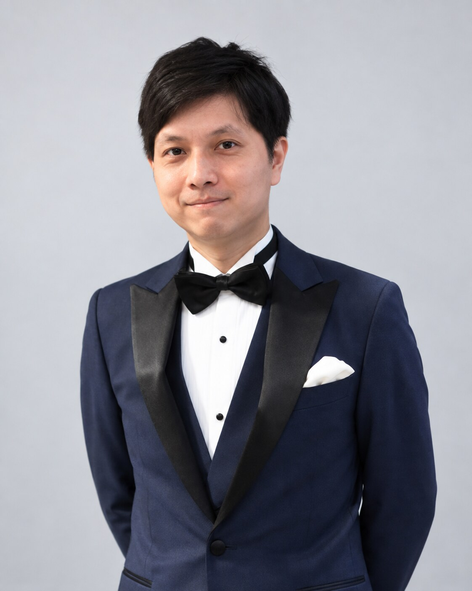

Inverse Rendering
Intrinsic Point-Cloud Decomposition
色付き点群を反射率、陰影、表面法線、照明へ分解し、 照明に依存しない三次元表現を構築する研究です。

Researcher
Physics-Informed AI × Computer Vision
NTT Human Informatics Laboratories / Waseda University
Researcher at NTT Human Informatics Laboratories and Visiting Researcher at Waseda University. My research interests include radiation imaging and 3D computer vision.
自己紹介
Shogo Sato received his Ph.D. from Waseda University, Japan, in 2025, with research in applied physics and computer vision. He is currently a Researcher at NTT Human Informatics Laboratories and a Visiting Researcher at Waseda University. His research interests include radiation imaging and 3D computer vision.
略歴
研究プロジェクト
Inverse Rendering
色付き点群を反射率、陰影、表面法線、照明へ分解し、 照明に依存しない三次元表現を構築する研究です。
Radiation Imaging
Compton CameraおよびSPECTを対象に、 疎で不完全な放射線計測から高品質な画像・体積を再構成する研究です。
出版物
査読付き国際会議論文、論文誌、国内会議発表の一覧は Google Scholar で公開しています。主要論文の詳細は今後このページにも追加します。
受賞歴
受賞歴の詳細は準備中です。